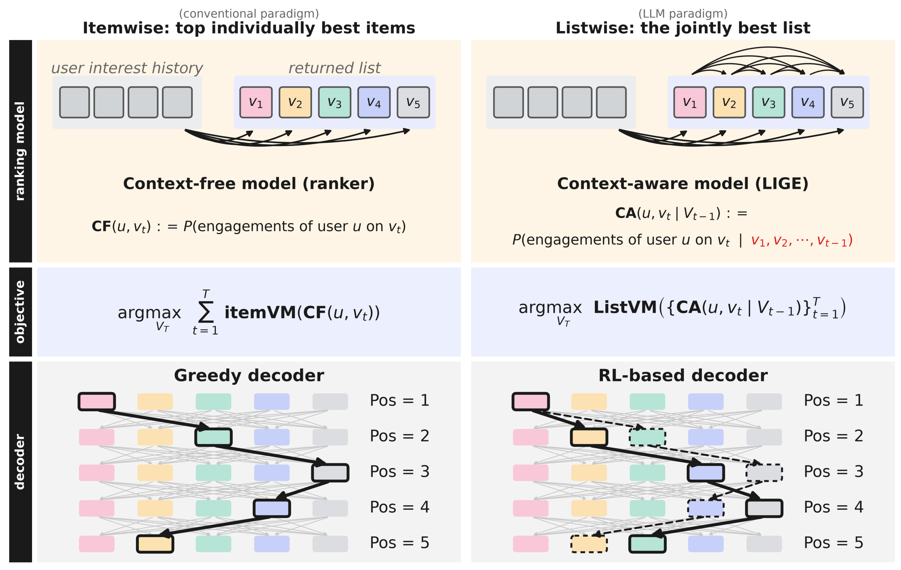
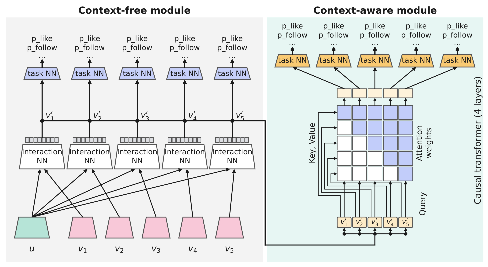
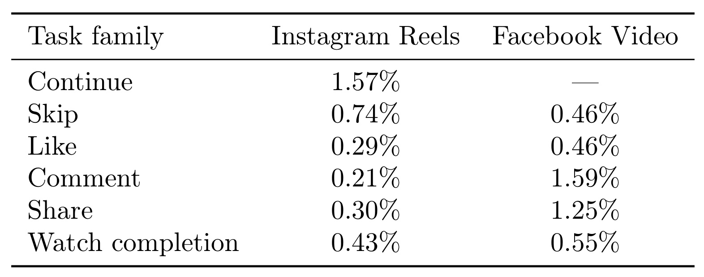
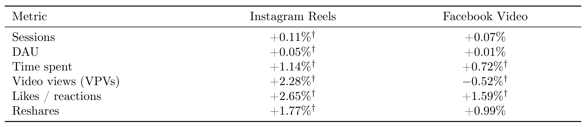
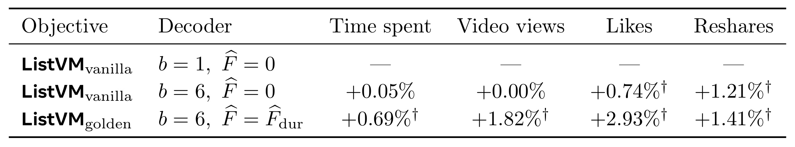
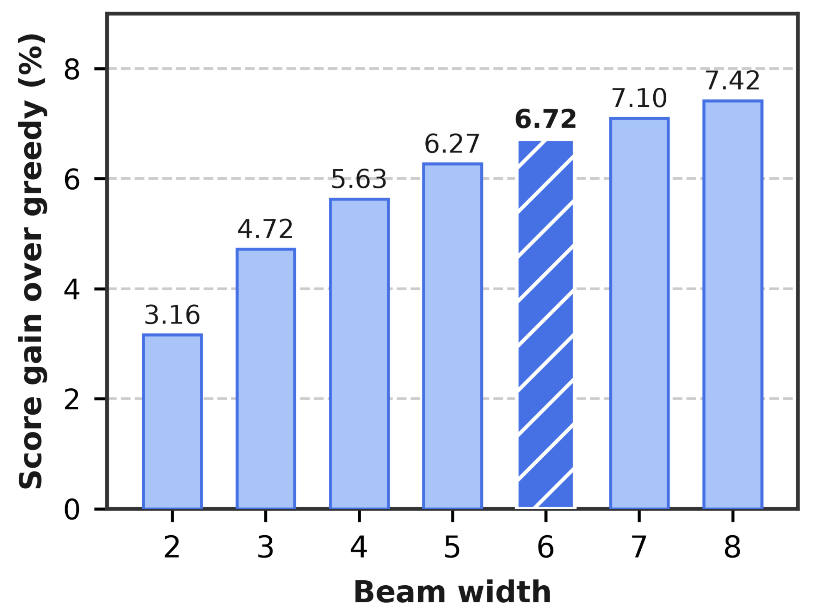
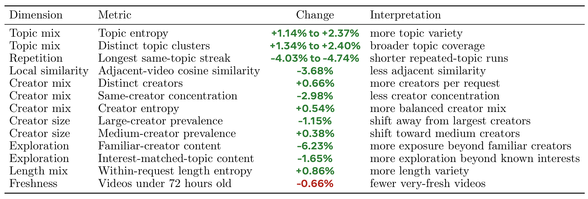

LIGE-GR：在保留工业排序系统的条件下生成推荐列表
论文： LIGE-GR: A Smooth Leap from Ranking to Generative Recommendation in the LLM Era
作者与机构： Venkat Srinivas、Chenzhang He、Sam Woodmansee、Shawn Lian、Wenjie Hu、Renjie Jiang 等，Meta Platforms；前六位作者标注同等贡献。
公开日期： 2026 年 9 月 16 日，arXiv v1；精读记录：2026 年 9 月 18 日。
原始入口： arXiv:2609.18148
主类别： 推荐算法；次级方向：列表生成、上下文排序、工业服务与序列决策。
代码状态： 本轮未核验到本文独立代码或项目入口。下文依据完整 20 页论文，实验数字均为论文报告，未独立复现。
1. 背景和问题
成熟推荐系统积累了多年产品逻辑、业务约束与服务设施，整体替换既有技术风险，也会扰动团队分工；需要在保留这些积累的条件下实现序列级生成与优化。
这段问题来自摘要和引言。论文关心的不是把视频标题改写成语言模型能读的句子，而是推荐决策的单位：产品每次返回的是一张有顺序的列表，模型却往往只在用户与单个候选之间估计互动概率。一个用户喜欢某一类内容，并不意味着连续看五个相似视频仍然具有相同的观看意愿。前一个视频可能提供后一个视频所需的背景，也可能消耗用户对同一主题的耐心。列表前端的内容还会影响用户是否继续浏览，因而后面项目的价值不应与第一项等权相加。仅把所有候选的单项分数算准，未必就能把整个请求的体验优化好。
这里的“上下文无关”有一个特别容易误读的限定。论文把原排序器称为 CF，即 context-free，并不是说它不读用户历史、不使用兴趣序列，也不是说工业排序还停留在线性模型。CF 可以包含复杂的用户特征、长期行为建模和多任务网络；它忽略的是本次正在构造的列表里已经选出的前缀。因此，给同一个用户和同一个视频换一个前序视频，原 CF 的输出仍相同。CA 即 context-aware，则进一步以这些已选内容为条件，重新估计点赞、分享、继续观看等结果。两者的差别处在当前请求内部，不应与历史序列推荐的“有无序列建模”混为一谈。
传统系统并非完全不知道列表效应。作者承认，生产系统早就使用类目间隔规则、DPP 多样性项、业务硬约束和其他调控逻辑。一类视频已经出现，后续同类候选便被降分；某些内容不能共同出现在列表里，就用规则排除。这些规则能改善体验，但未必能覆盖内容互补、兴趣饱和与疲劳的细粒度组合。固定的同类降权，也不一定知道某个用户今天愿意连续看两段相关视频，却不愿意再看第三段。论文并不删除这些控制逻辑，而是允许模型学到的条件概率与既有控制层共同参与决策。
工业迁移的第二重困难来自基线本身。现有排序体系已经反复优化多年，维护了多种互动目标、特征管道、业务价值权重、GPU 服务批处理和线上回退路径。如果把召回到排序全部替换为一个新生成模型，早期性能变化很难归因：是序列生成能力弱，还是少了旧系统的重要特征，或者新的服务链路压缩了候选覆盖？为了重新追回旧基线积累，团队可能先付出很长的开发时间。系统越深地耦合新架构，回滚就越不像关闭一个实验开关。论文把这种工程可逆性也作为设计目标，而不是在模型结果出来后才讨论部署。
LIGE-GR 选择在既有排序阶段增加列表建模能力。它保留原 CF 模型产生的中间表示，在其上增加一个轻量因果 Transformer；保留原业务价值函数和控制层，同时允许价值函数从单项累加扩展为带继续观看概率的整表价值；再把单一路径的贪心选择扩展为保留多个前缀的搜索。这三项可以逐步启用，而不是一次性押注整套新系统。准确理解这点也有助于解读标题中的“生成式推荐”：这里生成的是已经召回并进入排序的候选集合的排列与选择，不是在全量内容库上直接生成语义 ID，也没有让语言模型输出视频的自然语言名称。
论文的实验场景是 Instagram Reels 与 Facebook Video 的短视频推荐。候选池量级为一百左右，输出列表长度量级约十。这个规模足以包含组合爆炸：即便不考虑用户退出，从上百个候选选出十个不重复项目并排序，也不可能在线穷举所有排列。但它又足够小，允许系统缓存每个候选的表示，在多个解码步上批量重新评分。系统实际还裁减进入 CA 的候选数量，用 CF 的高质量分数保留排名靠前的大约三分之一，以控制服务成本。这意味着研究对象从一开始就是受限候选池内的高质量列表构造，而不是百万乃至亿级检索问题。
它与传统重排研究也存在连续关系。已有方法用双向自注意力理解候选集合，用生成器提出完整列表，再用评估器挑选较好的列表；还有自回归列表模型逐个选择候选。LIGE-GR 的特点是把预测、价值与搜索接入原排序阶段，并在列表尚未完成时就评估和剪枝低价值前缀。它没有证明自己是第一个考虑列表相互作用的方法，也没有必要做这种强断言。对于工程读者，更有用的问题是：现有模型的哪些计算可以复用，新增条件信息是否真正改善预测，列表目标如何暴露业务控制接口，以及收益能否覆盖多步推理开销。
论文的证据链因此需要分层阅读。预测实验检验 CA 是否降低归一化熵；基础线上实验只启用 CA 与简单列表求和，仍使用宽度为一的解码器；更丰富的线上对照才测试宽束搜索及带时长校正的未来价值；最后用同一请求的两张列表诊断内容生态变化。这几层分别回答“预测是否更准”“轻量升级是否有效”“更复杂的搜索是否额外有益”和“曝光分布怎样变化”。若直接把摘要里的观看时长收益归功于最复杂的 Palette 设置，就会跳过论文最重要的实验区分。
除此之外，生成列表时模型尚未观测用户对前缀的实际反应。一次请求里的十个位置通常在返回前一起决定，所以所谓前缀条件化，是条件于已选择的内容及其特征，而不是条件于用户刚刚点赞或跳过的真实在线反馈。若把这两种过程混同，就会高估系统的交互适应能力。继续观看概率也是在这个信息约束下的预测量。它可以帮助估算用户是否到达后续位置，但无法消除对未发生行为的估计误差。这一设定把论文与每消费一个视频就重新请求、重新观察反馈的持续决策系统区分开来，也解释了为什么列表长度和当前请求边界会影响方法的适用范围。
2. 方法
2.1 保留 CF 表示，再用 CA 预测当前列表前缀的影响
先用统一符号描述旧排序与新模型。对于用户请求，候选集合为 $C$，已选择的前缀为 $V_{t-1}$，每次选择一个未出现过的候选 $v_t$，最终得到长度为 $T$ 的列表。旧模型输出各互动概率，业务价值函数把这些概率变为标量，控制层再施加有限降权或硬屏蔽：
符号解释：$u$ 是用户特征，$T$ 是请求列表长度，$\operatorname{itemVM}$ 将点赞、关注、分享等预测信号按业务权重融合；$\operatorname{CL}$ 是控制层。有限值修正分数，负无穷表示候选不可行。这里保留前缀控制层，所以即使旧模型预测不变，原生产解码也未必等价于一次静态排序。只有不考虑相关控制项时，单项求和的最优解才直接对应 Top-$T$。本文把旧体系作为可恢复的特例，新体系则主要把其中的 CF 替换为 CA，并进一步升级列表评价和搜索。

Figure 2 从上到下把升级分成三个不同位置。最上层左侧的箭头只连接用户兴趣与各个候选，右侧多出的候选间箭头表达当前列表前缀的条件信息。这些箭头不是图神经网络边，也不意味着未来项目可被当前预测偷看；具体实现随后使用因果掩码。中间一层将独立项目效用之和改为列表价值，但“列表价值”本身还可以取简单求和或带继续观看概率的不同形式。因此，右列并不对应唯一一组线上配置，而是一族可逐步增加能力的配置。底部左图只沿单一路径向下选取，右图允许同时保留多个候选前缀。图中的虚线表示搜索的其他可能路径，不能解释为模型已经执行了多次用户交互或者拿到了这些路径的真实回报。每一步仍使用模型预测和预设价值函数进行比较。把三层分别看清楚之后，才能理解为什么论文先报告宽度为一的收益：单独改善最上层预测，就可能提升整表结果，并不需要等到最下面的多路径搜索全部开启。相反，只加宽搜索而不改善中间的评价标准，可能只会更充分地优化一个仍然偏离用户消费行为的分数。这个框架图因而提供的是可拆分的系统设计，而不是一张证明所有模块均有独立收益的实验图。CA 的实现复用原模型已经计算好的用户—候选交互表示。CF 对每个候选只算一次重特征网络，把中间表示送入一个四层、四头的 GPT 风格因果 Transformer。它对当前候选只看已选前缀，输出与旧模型兼容的多任务互动预测：
符号解释：$v'_c$ 是 CF 的中间表示，已经编码用户与候选的信息；$\operatorname{Heads}$ 是各互动任务的输出头。公式是对原文逻辑接口的紧凑表达，原文没有规定所有实现都必须使用同一个表示层名。因果 Transformer 的条件范围是当前请求已选前缀，并非整个待选候选集的任意双向注意力。昂贵的特征计算被缓存，新增的多步成本主要来自轻量 CA 前向。同一个候选放到不同前缀后，CA 输出可以改变，CF 表示则不需要重新计算。

Figure 3 左侧最底部是用户和各视频输入，上方交互网络产生每个候选的中间表示，任务头继续保留原来的预测路径。粗连接线把这些表示传到右侧，从而说明增量模块不是重新读取全部原始特征再跑一遍完整大排序器。右侧矩阵的可见区域表达因果注意力约束：某个位置的预测能使用此前已经选出的项目，但不依赖尚未决定的未来顺序。图中多个任务头是在不同位置上使用共享网络，并不表示每个视频都训练了自己的独立参数。这个结构有两类互补输出：原 CF 分数既能做预筛，也能在新增路径失败时直接回退；CA 分数则服务于带前缀的继续选择。需特别注意，原图展示的是模型信息流而非完整训练配方。论文没有公开完整样本构造、负采样、所有损失权重及训练轮数，不能据图补出一个“使用列表级强化学习端到端训练”的过程。作者通过归一化熵比较 CA 和 CF 的预测质量，并把更复杂的未来价值留在解码阶段。这使训练与推理的边界较清楚：训练获得条件预测器，推理根据业务效用和可行性规则搜索列表。它也留下一个可复现问题，即训练前缀主要来自历史曝光，而解码时前缀由模型自身构造，两者分布变化究竟有多大，文中没有给出足够细的分析。
还有一个结构上的约束是候选之间不能重复选取。右侧模块对同一候选在不同前缀下重评分，并不意味着把同一视频作为多个独立项目反复放入列表；可行动作集合始终排除前缀中已经存在的项目。模型负责预测这些合法扩展的价值，去重由搜索状态保证。将特征复用与动作可行性分开实现，能避免为了缓存命中而错误复用本应依赖前缀的预测分数。
2.2 ListVM：先求和，再按继续观看的累计概率加权
简单版本仍沿用每个项目的业务效用，只是把预测器改为 CA：
符号解释：$\operatorname{ListVM}_{\mathrm{vanilla}}$ 是原文式 8 的简单列表价值，其每项预测已依赖前缀；$\operatorname{CL}$ 继续承担多样性与业务约束。虽然外层形式还是求和，但项目价值随顺序改变，已经不是独立项目求和。同一候选在两个前缀中可能具有不同分数，因此排序结果不能简单从一组固定分数还原。后文 Table 2 的主要线上收益来自这个版本与宽度为一的组合，尚未启用累计继续概率。用户可能中途退出，所以后续项目的价值应乘上到达该位置的概率。原文式 9 将继续观看视为沿前缀累积的存活概率：
符号解释：$q_t$ 是看过当前位置内容后继续浏览的条件概率；$P_t$ 是看完前缀后仍继续的累计概率；$s_t^{\mathrm{CA}}$ 表示使用 CA 预测时的项目效用加控制项。第一项乘 $P_0=1$，第二项乘第一项的继续概率，以此类推。若所有 $q_t=1$，便退化为简单求和。这里的“期望列表价值”解释依赖继续概率校准与条件效用建模，不能因为使用了概率乘积就认定已经精确模拟真实用户。特别是点击、点赞与退出之间存在相关性，长期满意度也不是一张十项列表的局部指标能够完全代表的。
这套目标保留了明确的业务接口。调整点赞或分享权重，改变的是每个位置的即时价值；调整继续概率建模，改变的是后续位置的到达权重；控制层则限定哪些扩展可被搜索。三种作用不宜混成一个不可解释的总分。对硬约束，算法在扩展集合阶段先剔除负无穷候选，而不是等乘上很小的到达概率后再尝试数值处理。作者默认每一步至少存在一个可行候选；如果真实服务可能出现全部屏蔽或可行候选不足，系统还需要另行定义补位策略，论文并未展示这一异常分支的效果。
2.3 Palette：用剩余价值估计选择前缀，并控制多步服务成本
Palette 维护一组最多含 $b$ 个前缀的束。每个解码位置，对每个前缀扩展所有未选且可行的候选，更新累计价值与继续概率，然后只保留搜索分数最高的 $b$ 个扩展。原文式 10 定义：
符号解释：$V^{+c}$ 表示把候选 $c$ 追加到前缀 $V$；$Q$ 是剪枝排序分数；$\widehat F$ 是尚未填满位置的估计价值。最终达到 $T$ 个位置时，未来位置为空，$\widehat F=0$，返回保留完整列表中 ListVM 最大者。论文把前缀解释为状态、下一候选解释为动作，因此称其为基于强化学习的解码器，但当前实现没有额外训练一个价值网络，也没有给出 PPO 或策略梯度训练过程。这是一种有序列决策解释的值引导搜索，不能由术语直接推导出完整强化学习闭环。
为了避免额外价值网络和大量模拟调用，作者先计算前缀中未乘累计继续概率的平均项目分数，再假设未来每步继续概率等于最近一个项目的继续概率。对应原文式 11、12：
符号解释：$\bar s$ 是已选前缀的平均即时分数，$\tau$ 是前缀位置，$j$ 表示未来的第几个位置，$q_t$ 为最新项目的继续概率。原文式 11 求和下标写作 $\tau$，项目下标出现 $v_i$，此处按上下文统一为 $v_\tau$，避免传播索引笔误。该估计把过去平均价值和最近继续概率外推到未来，计算便宜但假设较强。原文式 12 没有额外乘前缀累计存活率 $P_t$；因此这里忠实保留其定义，不能替作者补成严格无条件剩余回报，也不能声称它满足可采纳启发式或全局最优搜索保证。
这个估计会产生时长偏置。若两个视频每秒退出倾向相近，更长的视频看完后继续的整体概率通常更小；把这个整体概率重复用于所有未来位置，会把最后一个长视频的时长影响重复施加多次。作者改用前缀平均视频时长重标最近继续概率，得到式 13、14：
符号解释：$d_t$ 是最近一个视频的时长，$D(V_t)$ 为已选内容总时长，$\bar d$ 为平均时长，$\widetilde q_t$ 是时长归一后的继续概率。最近视频比平均长时，指数小于一，会提升用于外推的概率；最近视频更短时则相反。它试图消除重复套用最近时长导致的偏好，而非直接给长视频额外奖励。这个形式隐含近似稳定的时间尺度退出规律，实际用户的退出可能在开头或结尾高度集中，故仍是启发式校正。线上组合同时启用 golden 与这个未来估计，论文没有单独隔离每一项的因果贡献。
服务过程分两阶段：先跑原 CF 并缓存分数与中间表示，再进行约 $T$ 次轻量 CA 批处理。加宽束主要扩大每次批处理规模，而不是把串行步数从 $T$ 变成 $bT$；不过内存占用、计算和调度压力仍会上升。候选预筛进一步把 CA 重评分池裁成约原池三分之一，论文称在两代 GPU 上可比全池重评分提高约六至八成吞吐。算法还按实际请求长度解码，避免生成最大长度后再截断。若 CA 调用失败或超过请求预算，系统使用缓存 CF 分数、宽度一、继续概率恒一且未来值为零的配置回退。全局关闭新增路径也无需重训旧模型。这些是服务设计的可逆性保证，具体故障率、回退率和尾延迟分布则未公开，不能把有回退分支等同于已经量化了所有线上可靠性风险。
3. 实验结果
3.1 预测改善：先看 NE，再区分业务收益
预测实验比较 CA 与 CF 的归一化熵 NE。表中正数表示 NE 降低，即预测误差改善，而不是熵越大越好。Instagram 数字来自一次在线训练运行的累积结果，Facebook 来自该产品的 CA 对 CF 评估；它们不是统一公开数据集上的同一次训练。论文没有开放完整训练样本、特征实现和绝对 NE，所以这些读数主要说明工业环境中的条件信息增益，不能拿来给其他模型跨数据集排名。

Table 1 的 Instagram 六类任务均为正向，其中 Continue 改善 1.57%，Skip 为 0.74%，Like 为 0.29%，Comment 为 0.21%，Share 为 0.30%，完播为 0.43%。继续观看任务改善最大，符合当前列表前缀与是否继续浏览有关的直觉，但该对应关系仍是解释而不是独立机制实验证明。Facebook 表中没有 Continue，破折号代表未跟踪，不能填成零或推测没有收益；其余展示任务分别改善 0.46%、0.46%、1.59%、1.25% 和 0.55%。需要继续读正文才能知道，Facebook 实際共评估十七个任务，其中十五个改善，另两个次要任务有不超过 0.07% 的退化。只看展示子集会误写成全部任务变好。表里的相对改善也不能直接改写为 AUC 提升多少个百分点，两种指标的分母与语义不同。预测目标的统计改善为后面的列表决策提供基础，却不自动保证用户观看时长或创作者生态改善，因为业务目标还经过 itemVM 权重、控制层与最终解码选择。一个任务更准，甚至可能重新分配不同目标之间的权衡，使某些业务指标下降。因此本表最稳健的结论是当前前缀提供了可利用的预测信息，尤其在该 Instagram 评估的继续行为任务上比较明显；更广泛的产品结论必须由后面的随机在线实验支撑。
NE 的改变量还受各任务的事件稀疏度、原基线误差和标签定义影响。因此这里无法用“继续任务改善最大”进一步推断它对最终观看时长贡献最大。一个低频互动任务相对误差改善较小，经过较高业务权重后仍可能改变大量列表选择。原文也没有提供逐任务关掉 CA 的线上消融，所以不能把表中的六个数按大小排成六个业务模块的贡献排序。更严谨的验证需要保留同一评估样本，比较绝对误差、校准与按浏览深度分层的误差，再对照对应线上目标，而本文披露的主要是相对归一化熵层面的总体读数。
3.2 宽度一的基础升级已经取得线上收益
基础配置是 CA、ListVM vanilla、束宽一、未来估计为零。它并未启用 golden 的累计继续概率。Instagram 的实验组与基线各包含 1.5% 用户，Facebook 实验组约 2% 并配相近规模对照，两个产品均报告七天结果。每个产品都与自身持续优化的生产基线比较，而不是与公开弱基线比较。下面保留所有主要读数，避免只摘正向观看时长。

Table 2 中 Instagram 的观看时长提升 1.14%，视频播放量提升 2.28%，点赞提升 2.65%，转分享提升 1.77%，会话数提升 0.11%，日活提升 0.05%；这些行均标注了小于 0.001 的显著性水平。Facebook 的观看时长提升 0.72%，互动反应提升 1.59%，视频播放量却下降 0.52%，这三个变化都带显著性标记。其会话数提升 0.07%、日活提升 0.01%、转分享提升 0.99%，没有相同标记，不应替它们补上显著结论。尤其要保留播放量下降：时长与播放次数并不是同一个目标，更多时间可以来自更长观看或内容组合变化，并不要求更多视频被播放。论文没有在这张表中给出足够细的分解，无法据此断定下降一定是好事。表注还区分了统计范围：Sessions 与 DAU 是整个产品活动，其他指标限制在对应短视频场景；Instagram 的 Likes 与 Facebook 的 reactions 也不是完全同一事件定义。把两个产品相同英文行名机械合并会掩盖这些差别。最关键的归因是，这些正向时长数字属于轻量基础配置，不能称为宽束或时长未来估计的收益。它证明保留原系统并增加前缀预测，在当前两个产品上具备增量价值；它没有直接证明更复杂的所有模块都已经贡献了这部分价值，也不能从七天读数推出长期留存提升。
成本需与这组配置绑定。两个场景基础配置的额外推理资源约为原 CF 组件资源的 10%；Instagram 请求端到端延迟相对原基线约增加 7%，Facebook 平均服务延迟约增加 2.2%。资源比例的分母是 CF 组件，不是整条推荐链路的总算力；延迟比例一个是端到端请求口径，另一个是平均服务口径，论文明确说明定义和基线不同，不能据此说 Facebook 部署效率必然更高。没有公开尾延迟和硬件成本金额，也不能把“10%”转成固定服务器数量或财务回报。基础实验说明作者找到了可接受的局部增量成本，但其他团队仍需用自己的候选数、批大小和 SLA 重新测量。
3.3 加宽搜索与升级价值函数是两件事
下一组实验仅在 Instagram 上进行，所有配置使用 CA，itemVM 内部权重相同，以前一节的宽度一基础配置为共同参照。一个实验臂只把束宽改为六，继续使用 vanilla 且无未来值；另一个实验臂同时使用宽度六、golden 与时长校正未来值。每个宽度六实验组约 3% 用户，匹配相近规模的宽度一对照，各自报告独立七天比较。因为这是独立实验对照，而非一个可以直接连乘的同群体序贯估计，不能把两张表的百分比相加成为未经测量的总收益。

Table 3 最有信息量的是中间一行：只把束宽从一增加到六，观看时长仅增加 0.05%，播放量为 0.00%，两者都没有显著性标记；点赞增加 0.74%、转分享增加 1.21%，带小于 0.001 的标记。这说明更大搜索空间能改变互动选择，却没有在消费指标上自动转化出普遍收益。最后一行同时换用 golden 与时长未来估计后，相对宽度一的观看时长增加 0.69%，播放量增加 1.82%，点赞增加 2.93%，转分享增加 1.41%，四项均有同级显著性标记。因此这张表支持的是“更贴近到达概率与时长的组合评价有助于把搜索用于消费目标”，并没有隔离证明单独的 golden、单独的未来项、或单独的时长归一各自贡献多少。尤其不能把最后一行减去中间一行就宣称那是某一个模块的严格独立效果；两臂虽然共享参照，但完整因果分解需要相应控制配置及统计检验。表中所有结果仍是相对宽度一的变化，而摘要里的 1.14% 则是宽度一对旧生产基线，两者语境必须随数字一起保留。从研究角度看，这组结果还给出了一个反例：优化能力增强不等于目标正确，若价值函数没有充分处理用户到达后续内容的概率，再认真搜索也可能只是在同一个代理目标上走得更远。
对应成本也不能沿用基础配置。相同候选规模与流量下，宽度六所需推理资源约为宽度一的 2.1 倍，作者据此推导额外资源约为 CF 的 20%。这是从基础比例与扩束成本得到的近似估计，不是宽度六完整服务链路的端到端延迟实测。论文明确说没有可比的宽度六端到端延迟估计。批处理让扩束成本远小于简单六倍，并不表示没有新增计算，也不表示流量高峰下仍可保持同样比例。若复现时只对比离线分数和平均延迟，遗漏排队、显存占用和回退率，便无法判断扩束是否适合上线。

Figure 5 使用 5,815 个去除异常值后的回放请求，保持继续概率恒一、未来值为零，仅改变束宽，纵轴是累计 VM 加控制项分数相对贪心参考的改善。宽度二到八的读数依次是 3.16%、4.72%、5.63%、6.27%、6.72%、7.10%、7.42%。作者把六选在趋于饱和的区域，但这里的“饱和”不是数学最优点：从六到八还有增益，只是增加幅度较小，需要与成本权衡。更重要的是，这张图的分数不是观看时长，也不是在线业务效用的直接观测。与前表结合，宽度六能把离线代理分数提高约 6.72%，同时在线时长仍接近中性，清楚展示代理目标与真实消费结果之间的间隙。附录还报告另一组 11,965 个回放请求的等价性检查，宽度一与原贪心解码的均值和四分位分数在 0.15% 范围内相符；这组样本不应与图中的过滤样本混为一个实验。可逆性的代数描述说明怎样恢复旧配置，回放检查则验证实现近似一致，两者各自承担不同证据角色。由于没有公开异常值过滤规则和请求分布，曲线的拐点未必能迁移到更长列表、更大候选池或不同控制层。合理用法是把束宽当成实际系统里的预算参数，并同时观察业务指标，而不是把六写成一个跨产品固定最优超参数。
该离线分析还提示，搜索预算应与目标校准一起调整。若少数候选的分数被模型高估，宽束可能更容易保留包含这些候选的前缀；离线最大值提高既可能来自发现了更优组合，也可能来自更充分地利用预测误差。本文没有直接测量后一种现象，因此它属于需要在复现中排查的风险，而不是已证实的失败原因。可以在增加束宽时并列观察预测分数、实际分桶回报以及分布外前缀比例，确认搜索没有越来越依赖训练分布稀少的组合。
3.4 列表生态变化及其代价
生态诊断针对基础配置，采用反事实日志记录同一个请求、相同输入下的旧列表与 CA 列表。样本覆盖三天，共 13,197 对请求，来自 7,110 个已知日志用户；其中 1,498 个请求缺少用户 ID，作者保守地按每个匿名请求一个用户计算，合成 8,608 个有效用户。不能将 1,498 解释为额外的已去重真实用户，也不能把 13,197 当成用户数。请求级抽样更容易纳入活跃用户，作者用分别拟合的贝叶斯层级线性模型处理同用户多请求，称各变化在 95% 水平显著。这仍是列表构成诊断，不是对长期满意度或创作者收入的直接随机因果测量。

Table 4 显示不同主题分类体系下，主题熵提高 1.14% 至 2.37%，不同主题簇数提高 1.34% 至 2.40%，最长同主题连续段减少 4.03% 至 4.74%，相邻视频余弦相似度下降 3.68%。这些结果说明列表更分散、重复连续段更短，但相邻内容相似度下降也可能削弱用户期待的连贯观看，因此不应把所有负向相似性读数自动视为质量提高。创作者方面，每请求不同作者数增加 0.66%，同作者集中度下降 2.98%，创作者熵增加 0.54%，大作者占比下降 1.15%，中等作者占比增加 0.38%。熟悉作者内容下降 6.23%，已知兴趣匹配主题下降 1.65%，作者将其解释为探索扩大；同时这意味着牺牲一部分即时亲和匹配，而不是免费得到更多探索。最下面红色一行尤其重要：发布不足七十二小时的视频比例下降 0.66%，是新鲜度退化，不是更均衡的正向结果。视频时长熵增加 0.86% 表明一张列表内长短内容组合更丰富，不能与用户实际观看时长提升划等号。原表右侧解释列是作者提供的诊断说明，保留它有助于辨认各行的业务含义，但最终评价仍要结合产品目标。主题多样性、作者探索、时效性并不天然一致，论文为这些权衡提供了可观测证据，并未证明所有生态维度都能同时改善。
原 Figure 4 还展示一个配对请求个例，但其视频缩略图是作者用 AI 生成的主题占位图，只有主题、时长、年龄与位置移动注释来自日志。本文不把这类缩略图当作实际曝光视频证据，因此不展示该图；对生态结论优先依赖 Table 4 的汇总数据。即便真实个例中出现新增主题、移后长视频或去掉重复话题，也只是帮助理解行为变化，不能替代全样本统计。未来若要验证新鲜度下降是否影响冷启动供给，需要追踪新内容曝光机会、作者后续产出和用户分层，而目前三天配对窗口与七天业务窗口都不足以回答这些长期问题。
4. 总结
LIGE-GR 最值得保留的设计经验，是把当前请求内部的列表关系接入一个已经成熟的排序系统，同时保持原模型输出、价值权重与控制层的可用性。CF 负责重特征交互并缓存表示，CA 在已选前缀上细化预测，ListVM 明确表达列表目标，Palette 再依据该目标保留与扩展前缀。这种职责划分让问题更容易诊断：预测差可查 CA，目标不合适可查价值函数，搜索不足可调束宽，超时可回退旧路径。论文的线上证据说明轻量 CA 加基础解码已有价值，也说明单纯加宽搜索并不保证更多观看时长。真正值得借鉴的是这两条同时成立，而不是只记住一个正向百分比。
对推荐研究，迁移起点应是明确“上下文”究竟是哪一种上下文。当前用户历史、当前候选集合与当前已选列表前缀分别提供不同信息；本文主要增加第三类。实验可先固定原特征与目标头，检验前缀条件化是否改善 Continue、Skip 等任务，再以原贪心解码控制搜索变化，避免多模块同时升级后无法归因。对于已有多样性控制的业务，CA 不必取代规则；它可以学习规则未覆盖的条件效应，而硬约束继续显式执行。若系统主要瓶颈在召回覆盖，候选池内更复杂的列表生成也无法找回从未进入池子的内容，这一点决定了它与语义 ID 召回的互补关系。
对大模型与 Agent 系统，可迁移的是“复用昂贵编码、在短候选空间中规划”的结构，而不是把本文收益直接外推到语言生成。检索增强生成可以先用重模型得到候选证据表示，再在受限集合中选择互补证据；多工具 Agent 也可在可行操作集上以代价和未来价值剪枝。但这些只是可能的研究方向，本文没有进行此类实验。语言任务的候选通常不固定，状态还随工具返回变化，继续观看概率也没有现成对应物。若照搬一个最近动作成功率的幂去估未来价值，可能放大错误校准，需要重新定义状态、目标和验证环境。
仍需保留至少四方面限制。第一，当前候选规模为数百量级，尚未解决全目录生成；扩大池子时每步批处理和搜索分支都会增长。第二，未来价值来自前缀平均分数、最近继续概率和平均时长的近似，没有学习价值网络，也没有最优性保证，校准偏差可能被连乘与搜索放大。第三，复杂配置缺少 golden、未来值、时长校正的独立消融，宽度六完整端到端延迟也未给出，难以计算每个模块的增益成本。第四，训练细节与数据未充分公开，线上仅七天，配对生态仅三天，不能确认长期留存、供给公平与用户疲劳的变化。第五，新鲜度和 Facebook 播放量存在明确退化，应作为实际产品权衡记录，而不是从摘要中消失。
后续复现可以沿三条路线展开。先做配置等价性与信息泄漏检查：禁用 CA 后应恢复原 CF 分数与控制逻辑，训练因果掩码不能读取未来曝光，回退时不能额外重跑重模型。再做目标分解实验：保持候选池、权重、束宽和用户流量一致，分别检验累计继续概率、未来估计与时长校正，并按视频时长和浏览深度观察校准误差。最后把成本与生态一起纳入验收：记录实际请求长度、候选裁减比例、GPU 批处理、尾延迟和回退率，同时关注新视频曝光、相邻连续性和探索分层。只有这些记录与线上业务结果一致，才能判断在自己的生产系统中是否值得走向更复杂的列表生成。